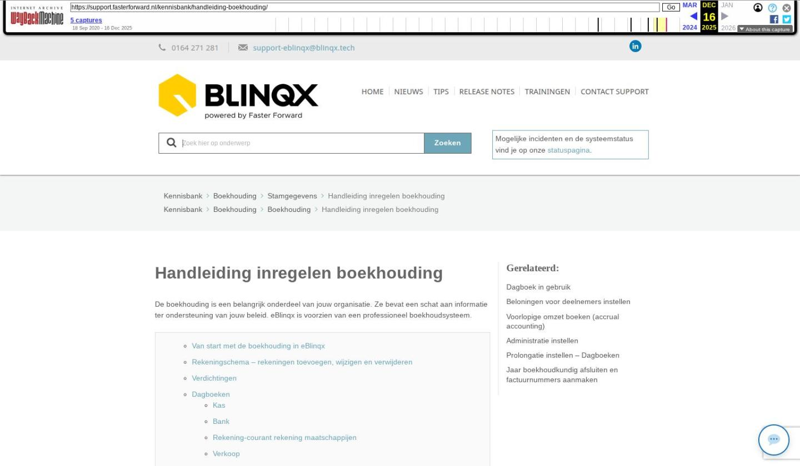

Handleiding inregelen boekhouding

Tekstinhoud
Handleiding inregelen boekhouding
De boekhouding is een belangrijk onderdeel van jouw organisatie. Ze bevat een schat aan informatie ter ondersteuning van jouw beleid. eBlinqx is voorzien van een professioneel boekhoudsysteem.
Van start met de boekhouding in eBlinqx
Rekeningschema – rekeningen toevoegen, wijzigen en verwijderen
Verdichtingen
Dagboeken
Kas
Bank
Rekening-courant rekening maatschappijen
Verkoop
Inkoop
Memoriaal
BTW Codes
Periodes
Kostenplaatsen
Administraties onderhoud
Van start met de boekhouding in eBlinqx
Voordat je begint:
eBlinqx is voorzien van een volledig ingerichte template-administratie. Hierin is opgenomen een standaardrekeningschema die gekoppeld is aan bijvoorbeeld de juiste verdichtingen en de juiste BTW codes. Wij adviseren om deze template als basis te gebruiken bij de inrichting van jouw eigen administratie. Dit scheelt je heel veel werk, en daarnaast is ook een betere werking van de applicatie gegarandeerd.
Het volledige menu van de boekhouding is te vinden in de menubalk onder het tabblad Financieel.
De verschillende onderdelen voor het inrichten van de administratie vinden we bij het onderdeel Stamgegevens.
Rekeningschema – rekeningen toevoegen, wijzigen en verwijderen
Bij 'Rekeningschema onderhoud' kun je rekeningen toevoegen, de omschrijving aanpassen of het rekeningnummer aanpassen. Het is ook mogelijk om rekeningen te verwijderen. Voorwaarde hiervoor is uiteraard wel dat er op deze rekening nog niet is geboekt. Verder zijn grootboekrekeningen pas te verwijderen als ze niet gekoppeld zijn onder een verdichting. Bij onderhoud verdichtingen kunnen de grootboekrekeningen ontkoppeld worden. Ook mag de rekening niet gekoppeld zijn in Administratie onderhoud bijvoorbeeld onder instellingen van de subadministraties.
Het aanpassen van een bestaand rekeningnummer kan door te klikken op het wijzigingsicoon. Het toevoegen van een nieuw nummer kan door te klikken op het plusicoon. Het volgende scherm wordt dan geopend:
"Geblokkeerd Ja/Nee" geeft aan of er nog gebruik mag worden gemaakt van deze grootboekrekening tijdens het boeken.
"Afdrukken Verdicht/Niet verdicht" geeft aan of 1 saldo per grootboekrekening moet worden afgedrukt (verdicht) of dat elke regel moet worden afgedrukt (niet verdicht).
Btw-code selecteren is verplicht.
Let op:
Nieuw toegevoegde rekeningen moeten hierna nog worden gekoppeld aan de juiste verdichting. Dit komt later aan de orde.
Verdichtingen
Bij 'Verdichtingen onderhoud' is het mogelijk de manier waarop je de cijfers wil presenteren te definiëren. In de template is een algemeen gangbaar model opgenomen zoals deze in de praktijk het meest wordt gehanteerd. Dit model sluit aan op de manier waarop de cijfers worden gepresenteerd in de jaarrekening. Je kun dit model aanpassen op de wijze zoals je wenst. Het toevoegen van extra rubrieken kan eenvoudig door op het 'plus-icoon' te klikken. Het aanpassen van de bestaande omschrijvingen kan door op het wijzigingsicoontje achter de omschrijving te klikken.
De grootboekrekeningen die niet gekoppeld zijn aan een verdichting worden zichtbaar in het scherm, wanneer je klikt op een folder. De niet gekoppelde grootboekrekeningen worden aan de rechterzijde getoond. Je koppelt deze rekeningen als volgt. Klik op de folder waaronder je deze rekening wilt rubriceren en klik vervolgens op het pijltje achter de grootboekrekening.
Alle grootboekrekeningen moeten worden gekoppeld aan een verdichting.
Let op: Indien een grootboekrekening niet wordt gekoppeld aan een verdichting wordt deze niet getoond op de rapportages.
Het ontkoppelen van grootboekrekening gaat als volgt:
Je klikt door op de folder. Op het laagste niveau worden de gekoppelde grootboekrekeningen getoond die aan de verdichting zijn gekoppeld. Klikken op het rode kruisje.
De betreffende rekening wordt vervolgens verwijderd bij deze verdichting en wordt weer getoond aan de rechterzijde van het scherm. De rekening kan vervolgens opnieuw aan de gewenste verdichting worden gekoppeld.
Dagboeken
In Dagboeken onderhoud kunnen dagboeken aangemaakt en gewijzigd worden.
Type: Hier hebben we de keuze uit de volgende mogelijkheden:
Kas
Bank
Rekening-courant rekening
Verkoop
Inkoop
Memoriaal
Bij elk van de type dagboeken dienen de volgende velden te worden ingevuld:
Kas
Code: nummer van het dagboek
Rekening: Dit is het grootboeknummer van de kas. Deze rekening wordt als tegenrekening van het dagboek gebruikt.
Bank
Automatisch verlaten:
Ja: bij het afboeken van een afschrift wordt automatisch het volgende boekstuk geopend zodra een bankafschrift volledig is geboekt
Nee: elk afschrift dient handmatig te worden opgeslagen
Hoofd:
Ja: Deze bankrekening wordt als hoofdbankrekening gebruikt en staat automatisch ingevuld als banknummer voor het verrichten van betalingen en incasso's. Indien er meerdere bankrekeningen zijn kan er uiteraard maar één als hoofd worden geselecteerd. Bij het verrichten van betalingen of incasso's kan er nog wel gewisseld worden tussen de verschillende banken
Incassant ID: is een uniek nummer en moet ingevuld zijn
Niet toegewezen: Indien gebruik wordt gemaakt van het inlezen van de bankafschriften wordt op dit rekeningnummer alle posten geboekt die niet automatisch worden herkend/ toegewezen door het systeem.
IBAN: Hier dient het volledige IBAN nummer ingevuld te worden. Dit is nodig om de functie inlezen bankafschriften te kunnen gebruiken.
Rekening-courant rekening maatschappijen
In de boekhouding van eBlinqx is een aparte subadministratie opgenomen om de rekening-courant verhoudingen met de verzekeringsmaatschappijen op een efficiënte en overzichtelijke manier registreren. Hiervoor dient per maatschappij een apart dagboek aangemaakt te worden van het type Rekening-courant maatschappijen.
Rekening: Hier dient de grootboekrekening Rekening-courant maatschappijen gekoppeld te worden. Bij onderhoud rekeningschema dient bij dit nummer gekoppeld te zijn aan de subadministratie Rekening-courant maatschappij.
Organisatie: Het dagboek dient gekoppeld te worden aan de betreffende maatschappij zoals die reeds is aangemaakt in eBlinqx.
Soort: Let op: Afhankelijk van de administratieve verwerking dient hier gekozen te worden voor Rekening-courant of Borderel. Wij adviseren hierin het volgende: Bij maatschappij-incasso kan hier het beste gekozen worden voor het type Borderel. Bij TP-incasso dient hier gekozen te worden voor het type Rekening-courant.
Verkoop
Rekening: Dit dagboek koppelen aan de grootboekrekening Debiteuren. Deze grootboekrekening dient weer gekoppeld te zijn aan de subadministratie debiteuren.
Inkoop
Rekening: Dit dagboek koppelen aan de grootboekrekening Crediteuren. Deze grootboekrekening dient weer gekoppeld te zijn aan de subadministratie crediteuren.
Memoriaal
Openingsbalans: Wij adviseren om voor het invoeren van de openingsbalans een apart memoriaal dagboek aan te maken. Bij openingsbalans dient dan ja aangevinkt te worden. Met dit dagboek kan vervolgens rechtstreeks op de andere tegenrekeningen van de dagboeken worden geboekt (banken e.d.)
BTW Codes
De BTW administratie kan ingeregeld worden met de zogenaamde BTW codes. De BTW wordt door gebruik van deze codes automatisch op de goede grootboekrekeningen geboekt. Klik op onderhoud BTW codes. Het onderstaand scherm wordt getoond:
De codes kunnen worden aangepast door te klikken op het wijzigingsicoon aan de rechterzijde van het scherm. Na klikken wordt het volgende scherm getoond:
Code: Hier kan een willekeurig nummer ingevoerd worden
Omschrijving: Geef hier een duidelijke omschrijving. Deze omschrijving wordt tijdens het boeken getoond.
Assurantiebelasting: Staat altijd op nee. (Voor de berekening van de assurantiebelasting wordt gebruik gemaakt van dezelfde systematiek als de BTW codes. Het is dus mogelijk om hier ook een code aan te maken voor assurantiebelasting.)
Percentage/Type: Geef hier het van toepassing zijnde BTW percentage in. Bij type is een keuze tussen Inclusief of Exclusief. Bij inclusief wordt het BTW bedrag berekend over het factuurbedrag inclusief BTW, dus bij het boeken van een factuur dient dan het bedrag inclusief BTW te worden ingegeven. Bij exclusief dan dienen de bedragen exclusief BTW te worden ingegeven om het juiste BTW bedrag te berekenen.
Rekening af te dragen: Koppel hier de grootboekrekening waarop de te betalen BTW geboekt dient te worden.
Rekening te vorderen: Koppel hier de grootboekrekening waarop de te vorderen BTW geboekt dient te worden.
De BTW codes kunnen worden gekoppeld aan de grootboekrekeningen bij Rekeningschema Onderhoud.
Periodes
Het openen en sluiten van een boekjaar is mogelijk bij Periodes onderhoud.
Door te klikken op het plus icoontje kan een boekjaar worden toegevoegd.
Boekjaar: Het gewenste boekjaar
Frequentie: Hier is in te stellen in hoeveel periodes het boekjaar wordt verdeeld. Standaard is dit ingesteld op 12 periodes. Er worden vervolgens 13 periodes aangemaakt. Periode 0 is bedoeld voor de openingsbalans.
Binnen een boekjaar is het mogelijk om periodes af te sluiten, bijvoorbeeld na het opmaken van tussentijdse cijfers is het niet gewenst dat er binnen die periode nog boekingen worden gemaakt en/of aangepast. Het afsluiten van een periode binnen een boekjaar werkt als volgt. Klik op het betreffende boekjaar. Druk op het groene icoontje (status) van de betreffende periode. Het icoontje verandert in een rood kruisje. De periode is nu afgesloten. Er kunnen geen boekingen meer in deze periode worden aangemaakt en/of aangepast. De periode kan weer worden geopend door weer op het rode icoontje te klikken.
Het afsluiten van een boekjaar is mogelijk door op het status icoontje voor het betreffende boekjaar te klikken.
Indien een boekjaar wordt afgesloten verschijnt een vierkant icoon aan de rechterzijde van het scherm.
Klik hierop om de eindbalans door te boeken naar het nieuwe boekjaar.
Als alle gegevens goed zijn ingevuld klik dan op de knop jaar afsluiten.
Het is mogelijk om een boekjaar weer opnieuw te openen om bijvoorbeeld nog correctieboekingen door te voeren. Klik weer op het status-icoon links. Het boekjaar wordt vervolgens weer geopend. Als de correcties zijn doorgevoerd kan het boekjaar opnieuw worden gesloten zoals hierboven beschreven. De gecorrigeerde eindbalans wordt als openingsbalans doorgeboekt naar het nieuwe boekjaar.
Kostenplaatsen
Indien er gebruik gemaakt wordt van een kostenplaatsenadministratie dan kunnen deze worden aangemaakt onder de functie Kostenplaatsen onderhoud.
Klik op het plusicoon om de gewenste kostenplaatsen toe te voegen.
Let op:
Voordat er geboekt kan worden op de kostenplaatsen dient bij Onderhoud administraties de kostenplaats op ja gezet te worden.
Administraties onderhoud
Onder deze functionaliteit is het mogelijk om algemene instellingen te verzorgen die gelden voor de boekhouding. Daarnaast worden hier een aantal zaken ingesteld die de werking tussen de boekhouding en de overige modules binnen eBlinqx regelt. Hier lees je meer over instellen van de administratie.
Verder is het hier mogelijk om meerdere administraties aan te maken. Klik op Administraties onderhoud.
De reeds aangemaakte administraties worden hier getoond. De administratie waarbij de status is aangegeven met het groene icoon is de actieve administratie. Klik op het wijzigingsicoon rechts om de instellingen aan te passen.
Aanmaken van een extra administratie
Klik op het plusicoon.
Administratie kopiëren
Het is mogelijk een template-administratie te kopiëren naar een nieuwe administratie. Dit is een snelle en efficiënte manier om snel met de nieuwe administratie aan de slag te kunnen. Hierbij worden alle stambestanden en instellingen gekopieerd naar de nieuwe administratie. Selecteer bij overnemen administratie de naam van de administratie die u wilt kopiëren. Klik vervolgens op opslaan.
Laatste update: 1 december 2025
Was deze informatie nuttig?
Ja Nee